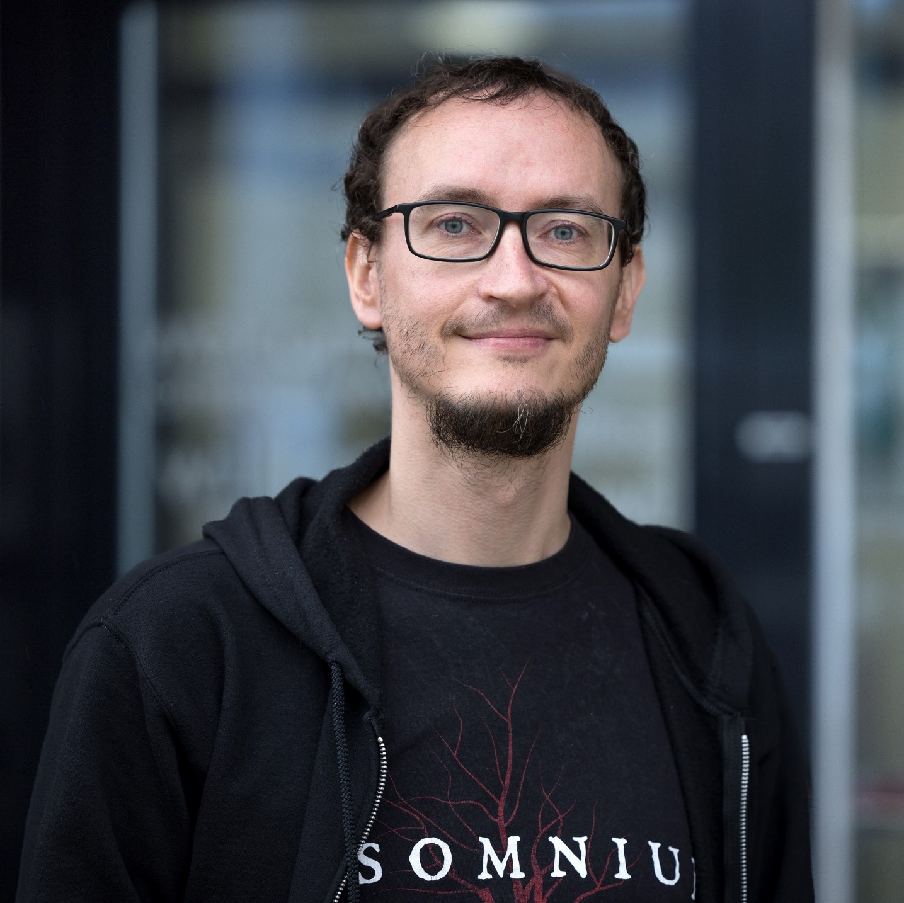

Team
Head of Research Group

Prof. Dr.-Ing. Ronny Seiger
Email: ronny dot seiger at rwth-aachen.de
Phone: +492418021322
Address: Informatikzentrum (Gebäude E1), Room 4102, Ahornstr. 55, 52074 Aachen, Germany
Short Bio: Prof. Dr. Ronny Seiger received his Diploma in computer science from Technische Universität Dresden, Germany in 2011, and his PhD in 2018. He was a research assistant at the Software Engineering of Ubiquitous Systems group from 2012 to 2015 and at the Software Technology group from 2015 to 2019, both at TU Dresden. From 2019 to 2022 Ronny Seiger worked as a Post-Doc at the Chair for Software Systems Programming and Development at the University of St. Gallen, Switzerland. From 2022 to 2026 he has been an Assistant Professor for Computer Science with focus on Software Engineering Methods and Techniques at the University of St.Gallen. In 2026 Prof. Ronny Seiger has been appointed professor of Software Architecture at RWTH Aachen University in Germany. His research interests include software engineering and software architecture, workflows and processes, Cyber-physical Systems (CPS) and Internet of Things (IoT), as well as robotics and distributed systems. His main research is at the intersection of business process management (BPM), software engineering, and IoT with a focus on developing software architectures and applying BPM technologies for analyzing and automating processes in Cyber-physical systems.
Profiles & Publications
Research Staff
We are currently seeking doctoral candidates / PhD students in the broader field of software architecture. If you are interested, please send an informal message to the head of the research group. An official announcement will follow soon.